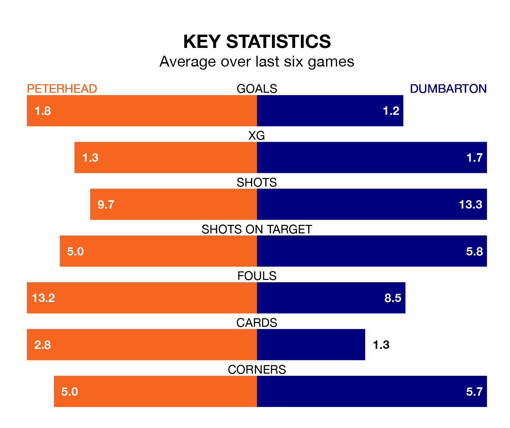

Two of League Two's top sides face each other at the Balmoor Stadium in Saturday's kick-off, when second-placed Peterhead host third-placed Dumbarton.
Peterhead have picked up 15 wins and 12 draws from 35 games so far this season, and sit on the same number of points as the visitors going into the 3pm match.
The Sons, meanwhile, have won 16 and drawn nine, picking up 57 points.
With 56 goals in 35 games so far this season, Peterhead are the league's highest scorers with 1.6 goals per game. And they are conceding fewer than average, letting in 38 goals at a rate of 1.1 per game.
Dumbarton are also above average scorers, with 1.6 goals per game, compared to a league average of 1.3. They have conceded 1.2 goals per game.
In the last 10 years, Peterhead and Dumbarton have played each other on 15 occasions. Peterhead won eight of them, Dumbarton five, and they drew twice.
On average, the Blue Toon scored 1.8 goals and the Sons 1.3 in those matches.
Their last meeting was on March 2, when Dumbarton won 1-0 at home.
In Tony Wallace, the Sons have one of the league's sharpest shooters so far this season. He has notched 11 goals in 34 appearances, to sit fifth in the scoring charts.
His goal rate of one every 204 minutes is slightly quicker than that of Hamish Ritchie, the Blue Toon's top scorer with a goal every 224 minutes, and a total of nine goals in 31 games.
The home side are in mixed form in League Two, with two wins and four draws from their last six games.
With three wins and three draws over that period, the visitors' form is slightly better – they have taken 12 points from 18, compared to Peterhead's 10.
Peterhead's last match was on April 27, a 2-2 draw against Spartans, with Kieran Watson (own goal) and Ritchie getting the goals for the Blue Toon.
Dumbarton drew 2-2 with Elgin City last time out, also on April 27, with James Graham and Michael Ruth on the scoresheet.
Updated: 10:44 (UTC), 30/04/24